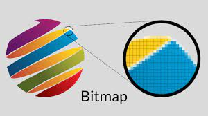

Een bitmap, vaak afgekort als "BMP," is een veelgebruikt bestandsformaat voor het opslaan van digitale afbeeldingen. Een bitmapafbeelding is een rasterafbeelding die bestaat uit een reeks pixels (beeldpunten) die in een rooster zijn gerangschikt. Elke pixel in een bitmapafbeelding heeft een specifieke kleurwaarde die wordt opgeslagen in de gegevens van het bestand. Enkele belangrijke kenmerken van bitmapafbeeldingen zijn:
Pixelgebaseerd: Bitmapafbeeldingen zijn pixelgebaseerd, wat betekent dat ze zijn samengesteld uit individuele gekleurde pixels die elk een specifieke positie en kleurwaarde hebben. Elk pixel bepaalt de kleur van een specifiek punt in de afbeelding. Hoge nauwkeurigheid: Bitmapafbeeldingen bieden een hoge mate van nauwkeurigheid en detail omdat ze elk pixel in de afbeelding kunnen definiëren. Dit maakt ze geschikt voor afbeeldingen waar precisie en detail van essentieel belang zijn. Grootte: Bitmapafbeeldingen kunnen grotere bestanden hebben in vergelijking met gecomprimeerde afbeeldingsindelingen zoals JPEG, omdat ze elke pixelinformatie opslaan zonder enig kwaliteitsverlies. Onafhankelijkheid van beeldschermgrootte: Bitmapafbeeldingen kunnen worden vergroot of verkleind zonder kwaliteitsverlies, maar het kan leiden tot zichtbare pixelatie als de vergroting te groot is.
Bitmapafbeeldingen worden vaak gebruikt voor afbeeldingen waarbij precisie en detail van cruciaal belang zijn, zoals tekeningen, logo's en grafieken. Ze zijn ook geschikt voor het bewerken van afbeeldingen in programma's zoals Adobe Photoshop, waar pixelnauwkeurigheid vaak vereist is.
Een van de meest voorkomende formaten voor bitmapafbeeldingen is het Windows Bitmap-formaat (BMP), dat vaak wordt gebruikt in Microsoft Windows-systemen. Bitmapafbeeldingen kunnen echter in verschillende andere bestandsindelingen worden opgeslagen, zoals PNG, TIFF, en RAW, afhankelijk van de behoeften van de gebruiker en de toepassing.
